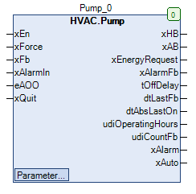
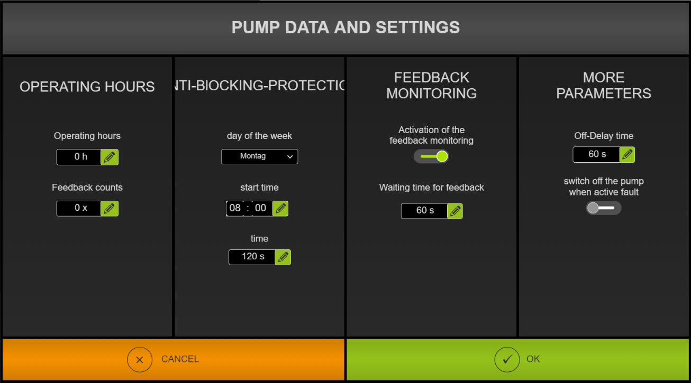

Pump (FB)¶
FUNCTION_BLOCK Pump
Short Description¶
Controlling a circulation pump with anti-lock function
Portrayal¶

Interfaces¶
Inputs¶
Name Datatype
Range
Init-Value
Functional Description
xEn BOOL Requirement of the circulation pump
xForce BOOL FALSE Forced override after manual override
xFb BOOL Operating message of the circulation pump
xAlarmIn BOOL Alarm message of the circulation pump
eAOO HVACTYPES.eManBin HVACTYPES.eManBin.Auto, HVACTYPES.eManBin.ManOff, HVACTYPES.eManBin.ManOn HVACTYPES.eManBin.Auto Operating mode of manual override - Hardware
xQuit BOOL FALSE Resetting the fault message of the operational monitoring
Outputs¶
Name Datatype
Range
Init-Value
Functional Description
xHB BOOL
FALSE: Manual output: circulation pump disabled
TRUE: Manual output: circulation pump enabled
xAB BOOL
FALSE: Automatic output: circulation pump disabled
TRUE: Automatic output: circulation pump enabled
xEnergyRequest BOOL
FALSE: Requirement power producer is not released
TRUE: Requirement Power production is released
xAlarmFb BOOL
FALSE: The operation monitoring error message is disabled
TRUE: The operation monitoring error message is enabled
tOffDelay TIME Remaining shut-off time of the circulation pump
dtLastFb DATE_AND_TIME Date / time of the last operation of the circulation pump
dtAbsLastOn DATE_AND_TIME Date / time of the last anti-lock operation
udiOperatingHours UDINT Operating hours of the circulation pump
udiCountFb UDINT Number of activations of the circulating pump
xAlarm BOOL
FALSE: Collective fault message disabled
TRUE: Collective fault message enabled
xAuto BOOL
FALSE: Collective message Automatic mode is not enabled
TRUE: Collective message Automatic mode is enabled
Setpoints / Parameters¶
Name Datatype
Range
Init-Value
Functional Description
xAlarmControl BOOL FALSE
FALSE: xHb independent of xAlarm
TRUE: xHb is disabled for xAlarm = TRUE
udiFbControlTime UDINT 0 ... 300s 60s Duration of operation monitoring
xFbControl BOOL TRUE
FALSE: Operation monitoring is disabled
TRUE: Operation monitoring is enabled
xForceOption BOOL TRUE
FALSE: Output xHB with forced override OFF
TRUE: Output xHB with forced override ON
tAbsTime UDINT 0 ... 600s 120s Duration of anti-lock operation
tAbsTime TOD 00:00:00 - 23:59:59 o’clock
08:00:00 o’clock
Time point of anti-lock operation
eAbsDay eDoW eDoW.Monday ... eDoW.Sunday eDoW.Monday Weekday of the anti-lock operation
eOffDelayTimeBase eTime eTime.Second, eTime.Minute, eTime.Hour eTime.Second Scaling of the follow-up time ( seconds / minutes / hours )
udiOffDelay UDINT 0 ... 60min 120s Follow-up period of the circulation pump
eManModeB eMANBIN eMANBIN.Auto, eMANBIN.ManOff, eMANBIN.ManOn eMANBIN.Auto Operating mode of manual override for the xHB digital output
Functional Description¶
Automatic output xAB¶
xEn xAlarm xAlarmControl Follow-up period
Anti-lock module
xAB Notes
X TRUE TRUE X X FALSE Shutdown enabled via collective alarm
FALSE X FALSE FALSE FALSE FALSE Automatic mode Off
TRUE x FALSE FALSE FALSE TRUE Automatic mode On
X X FALSE TRUE X TRUE Follow-up operation
X x FALSE X TRUE TRUE Anti-lock operation
*xHB*manual output¶
xAB eMANBIN xForce xForceOption xHB Notes
FALSE eMANBIN.Auto FALSE X FALSE Manual override module in automatic mode
TRUE eMANBIN.Auto FALSE X TRUE Manual override module in automatic mode
X eMANBIN.ManOn FALSE X TRUE Manual override module in manual mode On
X eMANBIN.ManOff FALSE X FALSE Manual override module in manual mode Off
X X TRUE FALSE FALSE Forced override Off
X X TRUE TRUE TRUE Forced override On
Requirement - Power generation xEnergyRequest¶
xFb
Follow-up period
Anti-lock module
xEnergyRequest Notes
FALSE X X FALSE Circulation pump is not in operation
TRUE FALSE FALSE TRUE Circulation pump is in operation
TRUE TRUE X FALSE Follow-up module is in operation
TRUE X TRUE FALSE Anti-lock module is in operation
Follow-up period¶
Anti-lock module¶
xAlarm output¶
xAlarmIn xAlarmFb xAlarm Notes
FALSE FALSE FALSE Collective alarm is inactive
TRUE FALSE TRUE External hardware error is active
FALSE TRUE TRUE The operation monitoring error is active
TRUE TRUE TRUE Both errors are active
Collective message automatic mode xAuto¶
Forced override xForce¶
Operating hours counter¶
Write access to the counter readings
Operation monitoring¶
Visualization¶
Suitable visualization element from the HVACV Visu Library: FB_PumpHorizontal or FB_PumpVertical
Portrayal¶
Interfaces Visu-Element¶
Name Datatype
Type
Init-Value
Functional Description
FB_Pump Pump VAR_IN_OUT Enter FB Pump here, for example PRG.Pump
rRotation INT VAR_INPUT Here rotation of pump graphic can be entered as number of degrees. e.g. 90 corresponds to turning 90 degrees to right side. -90 degrees corresponds to turning 90 degrees to left.
- Parameter dialog for the pump: FB_PumpParameter
- 
Codesys¶
- InOut:
Scope Name Type Initial Comment Input xEn BOOL Requirement of the circulation pump
xForce BOOL FALSE Forced override after Manual override
xFb BOOL Operating message of the circulation pump
xAlarmIn BOOL Alarm message of the circulation pump
eAOO eManBin HVACTYPES.eManBin.Auto Operating mode of manual override - Hardware
xQuit BOOL FALSE Resetting the fault message of the operational monitoring
Output xHB BOOL FALSE: Manual output: Circulation pump not enabledTRUE: Manual output: Circulation pump enabledxAB BOOL FALSE: Automatic output: Circulation pump not enabledTRUE: Automatic output: Circulation pump enabledxEnergyRequest BOOL FALSE: Request power production not releasedTRUE: Request energy production is releasedxAlarmFb BOOL FALSE: Alarm message operation monitoring not enabledTRUE: Alarm message operation monitoring enabledtOffDelay TIME Remaining shut-off time of the circulation pump
dtLastFb DT Date / time of the last operation of the circulation pump
dtAbsLastOn DT Date / time of the last anti-lock operation
udiOperatingHours UDINT Operating hours of the circulation pump
udiCountFb UDINT Number of activations of the circulating pump
xAlarm BOOL FALSE: Collective alarm message not enabledTRUE: Collective Alarm message enabledxAuto BOOL FALSE: Collective message Automatic mode not enabledTRUE: Collective message Automatic mode enabledInput xAlarmControl BOOL FALSE FALSE: xHb of xAlarm independentTRUE: xHb is disabled at xAlarm = TRUEudiFbControlTime UDINT 60 Duration of operation monitoring
xFbControl BOOL TRUE FALSE: Operation monitoring not enabledxFbControl = TRUE ( Operation Monitoring is enabled )xForceOption BOOL TRUE FALSE: Output xHB with forced override OFFTRUE: Output xHB with forced override ONudiAbsTime UDINT 120 Duration of anti-lock operation
todAbsStartTime TOD TIME_OF_DAY#8:0 Time point of anti-lock operation
eAbsDay eDoW eDow.Monday Weekday of the anti-lock operation
eOffDelayTimeBase eTime eTime.Second Scaling of the follow-up time ( seconds / minutes / hours )
udiOffDelay UDINT 60 Follow-up period of the circulation pump
eManModeB eMANBIN eMANBIN.Auto Operating mode of manual override for the xHB digital output